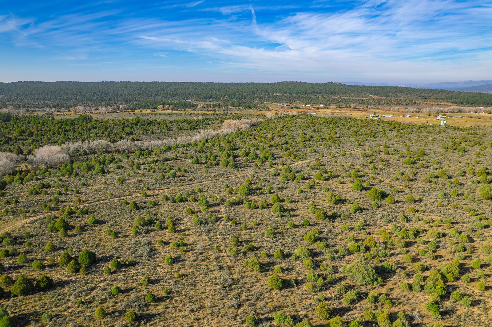

Every listing in the October 2026 Lincoln County Edition of The Real Estate Roundup — searchable, sortable, and straight from the magazine’s own pages.
Two magazines, one mountain region. The Lincoln County Edition listings are live below; the Otero County Edition joins them as soon as its print files arrive.
Ruidoso, Alto, Capitan, Carrizozo, Lincoln, Nogal and the Hondo Valley — 351 listings extracted from the October issue.
Browse the listings Read the digital editionAlamogordo, Cloudcroft, Tularosa, La Luz, High Rolls and Timberon. Searchable listings are on the way — the full issue is available digitally now.
Read the digital editionAs printed in the October 2026 issue. Listings change hands fast in the mountains — always confirm availability with the listing agent.
Property details and photos are reproduced from the October 2026 print edition of The Real Estate Roundup. To ask about a property, contact its listing agent or brokerage directly — contact details are on each listing.
Reach buyers across Lincoln and Otero County in print every month — and now online. Brokers, agents and local businesses: talk to us about rates and deadlines for the next issue.